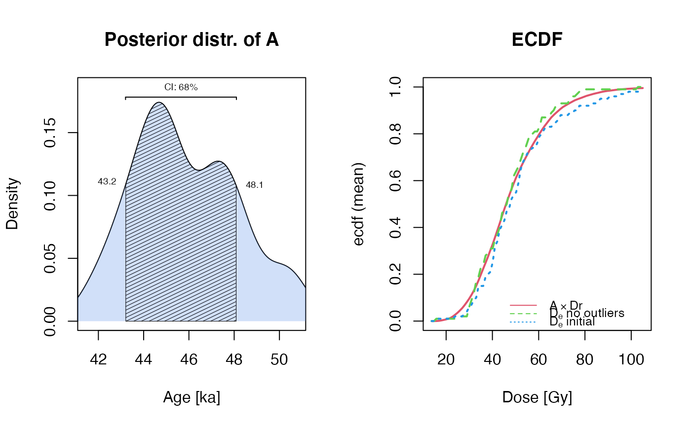

A Bayesian statistical analysis of OSL age requiring dose rate sample. Estimation contains a preliminary step for detecting outliers in the equivalent dose sample.
combine_De_Dr( De, s, Dr, int_OD, Age_range = c(1, 300), outlier_threshold = 0.05, outlier_method = "default", outlier_analysis_plot = FALSE, method_control = list(), par_local = TRUE, verbose = TRUE, plot = TRUE, ... )
| De | numeric (required): a equivalent dose sample |
|---|---|
| s | numeric (required): a vector of measurement errors on the equivalent dose |
| Dr | numeric (required): a dose rate sample |
| int_OD | numeric (required): the intrinsic overdispersion, typically the standard deviation characterizing a dose-recovery test distribution |
| Age_range | numeric (with default): the age range to be investigated by the algorithm, the larger the value the more iterations are needed and the longer it takes. Should not be set too narrow, cut the algorithm some slack. |
| outlier_threshold | numeric (with default): the required significance level used
for the outlier detection. If set to |
| outlier_method | character (with default): select the outlier detection
method, either |
| outlier_analysis_plot | logical (with default): enables/disables the outlier analysis plot. Note: the outlier analysis will happen with or without plot output |
| method_control | list (with default): named list of further parameters passed down to the rjags::rjags modelling |
| par_local | logical (with default): if set to |
| verbose | logical (with default): enable/disable terminal feedback |
| plot | logical (with default): enable/disable plot output |
| ... | a few further arguments to fine-tune the plot output such as
|
The function returns a plot if plot = TRUE and an RLum.Results
object with the following slots:
@data
.. $Ages: a numeric vector with the modelled ages to be further analysed or visualised
.. $Ages_stats: a data.frame with sum HPD, CI 68% and CI 95% for the ages
.. $outliers_index: the index with the detected outliers
.. $cdf_ADr_mean : empirical cumulative density distribution A * Dr (mean)
.. $cdf_ADr_quantiles : empirical cumulative density distribution A * Dr (quantiles .025,.975)
.. $cdf_De_no_outlier : empirical cumulative density distribution of the De with no outliers
.. $cdf_De_initial : empirical cumulative density distribution of the initial De
.. $mcmc_IAM : the MCMC list of the Individual Age Model, only of method_control = list(return_mcmc = TRUE) otherwise NULL
.. $mcmc_BCAM : the MCMC list of the Bayesian Central Age Model, only of method_control = list(return_mcmc = TRUE) otherwise NULL
@info
.. $call: the original function call
.. $model_IAM: the BUGS model used to derive the individual age
.. $model_BCAM: the BUGS model used to calculate the Bayesian Central Age
Outlier detection
Two different outlier detection methods are implemented (full details are given in the cited literature).
The default and recommend method, uses quantiles to compare prior and posterior distributions of the individual variances of the equivalent doses. If the corresponding quantile in the corresponding posterior distribution is larger than the quantile in the prior distribution, the value is marked as outlier (cf. Galharret et al., preprint)
The alternative method employs the method suggested by Rousseeuw and Croux (1993) using the absolute median distance.
Parameters available for method_control
The parameters listed below are used to granular control Bayesian modelling using
rjags::rjags. Internally the functions .calc_IndividualAgeModel() and
.calc_BayesianCentraAgelModel(). The parameter settings affect both models.
Note: method_control expects a named list of parameters
| PARAMETER | TYPE | DEFAULT | REMARKS |
variable.names_IAM | character | c('A', 'a', 'sig_a') | variables names to be monitored in the modelling process using the internal function .calc_IndividualAgeModel() |
variable.names_BCAM | character | c('A', 'D_e') | variables names to be monitored in the modelling process using the internal function .calc_BayesianCentraAgelModel() |
n.chains | integer | 4 | number of MCMC chains |
n.adapt | integer | 1000 | number of iterations for the adaptation |
n.iter | integer | 5000 | number of iterations to monitor cf. rjags::coda.samples |
thin | numeric | 1 | thinning interval for the monitoring cf. rjags::coda.samples |
diag | logical | FALSE | additional terminal convergence diagnostic.
FALSE if verbose = FALSE |
progress.bar | logical | FALSE | enable/disable progress bar. FALSE if verbose = FALSE |
quiet | logical | TRUE | silence terminal output. Set to TRUE if verbose = FALSE |
return_mcmc | logical | FALSE | return additional MCMC diagnostic information |
0.1.0
Philippe, A., Galharret, J., Mercier, N., Kreutzer, S., 2021. combine_De_Dr(): Combine Dose Rate and Equivalent Dose Distribution. Function version 0.1.0. In: Kreutzer, S., Burow, C., Dietze, M., Fuchs, M.C., Schmidt, C., Fischer, M., Friedrich, J., Mercier, N., Philippe, A., Riedesel, S., Autzen, M., Mittelstrass, D., Gray, H.J., Galharret, J., 2021. Luminescence: Comprehensive Luminescence Dating Data Analysis. R package version 0.9.16. https://CRAN.R-project.org/package=Luminescence
Mercier, N., Galharret, J.-M., Tribolo, C., Kreutzer, S., Philippe, A., preprint. Luminescence age calculation through Bayesian convolution of equivalent dose and dose-rate distributions: the De_Dr model. Geochronology, 1-22.
Galharret, J-M., Philippe, A., Mercier, N., preprint. Detection of outliers with a Bayesian hierarchical model: application to the single-grain luminescence dating method. Electronic Journal of Applied Statistics
Further reading
Rousseeuw, P.J., Croux, C., 1993. Alternatives to the median absolute deviation. Journal of the American Statistical Association 88, 1273–1283. doi: 10.2307/2291267
Rousseeuw, P.J., Debruyne, M., Engelen, S., Hubert, M., 2006. Robustness and outlier detection in chemometrics. Critical Reviews in Analytical Chemistry 36, 221–242. doi: 10.1080/10408340600969403
plot_OSLAgeSummary, rjags::rjags, mclust-package
Anne Philippe, Université de Nantes (France), Jean-Michel Galharret, Université de Nantes (France), Norbert Mercier, IRAMAT-CRP2A, Université Bordeaux Montaigne (France), Sebastian Kreutzer, Geography & Earth Sciences, Aberystwyth University (United Kingdom) , RLum Developer Team
## set parameters Dr <- stats::rlnorm (1000, 0, 0.3) De <- 50*sample(Dr, 50, replace = TRUE) s <- stats::rnorm(50, 10, 2) ## run modelling ## note: modify parameters for more realistic results results <- combine_De_Dr( Dr = Dr, int_OD = 0.1, De, s, Age_range = c(0,100), method_control = list( n.iter = 100, n.chains = 1)) #> Loading required namespace: rjags #> Loading required namespace: mclust #> #> [combine_De_Dr()] #> (1) Running Bayesian modelling 'Individual Age Model' ... DONE #> >> Outliers detected: 3/50 (6%) #> (2) Running Bayesian modelling 'Bayesian Central Age Model' ... DONE #> (3) Age results (presumably in ka) #> ----------------------------------- #> Age (HPD) : 44.69 #> Age (CI 68%): 43.18 : 48.06 #> Age (CI 95%): 41.65 : 50.79 #> -----------------------------------  ## show models used writeLines(results@info$model_IAM) #> model{ #> for( i in 1 : N ) { #> D_e[i] ~ dnorm(a[i] * mu[z[i]], tau[i]) #> tau[i] <- 1 / (a[i] * sigma[z[i]]) ^ 2 #> z[i] ~ dcat(theta) #> De[i] ~ dnorm(D_e[i], prec2[i]) #> a[i] ~ dnorm(A, prec_a[i]) #> u[i] ~ dunif(0, 1) #> prec_a[i] <- 1 / s02 * u[i] / (1 - u[i]) #> prec2[i] <- 1 / (s2[i]) #> sig_a[i] <- 1 / sqrt(prec_a[i]) #> } #> A ~ dunif(Amin, Amax) #> } writeLines(results@info$model_BCAM) #> #> model{ #> for( i in 1:J) { #> D_e[i] ~ dnorm(A*mu[z[i]],tau[i]) #> tau[i]<-1/(A*sigma[z[i]])^2 #> z[i] ~ dcat(theta) #> De[i] ~ dnorm(D_e[i], prec2[i]) #> prec2[i] <- 1/(s2[i]) #> } #> #> A ~ dunif(Amin,Amax) #> }